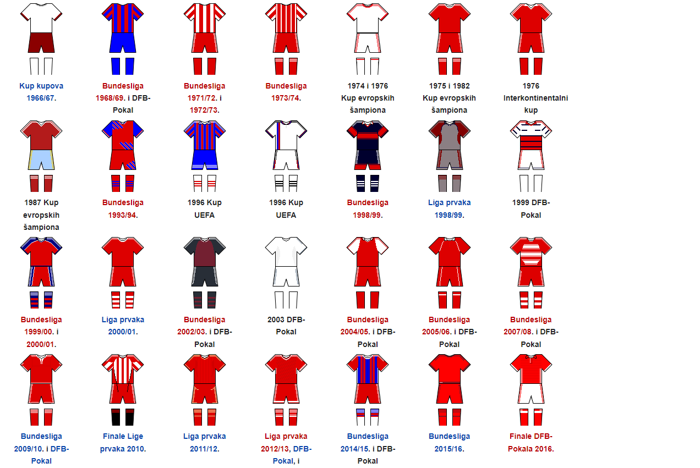
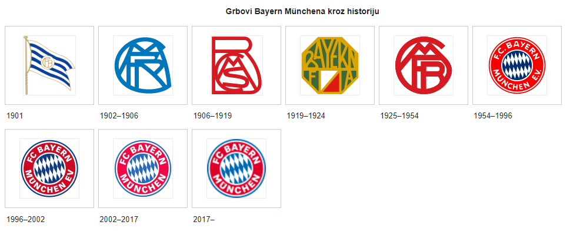

Početna
Tim
Historija
Utakmice
Galerija
Historija
Osnovan je 1900. u Münchenu, a ekipu je činilo 11 igrača predvođenih Franzom Johnom.Iako su osvojili titulu prvaka Njemačke 1932,klub nije bio uvršten u novoosnovanu Bundesligu 1963.
Najuspješniji period Bayern je imao sredinom 1970-ih, kada su, pod kapitenstvom Franza Beckenbauera osvojili Kup evropskih šampiona triput zaredom (1974–1976). Klub je igrao 11 finala Kupa evropskih šampiona / Lige prvaka. Posljednji put to je bilo 2020. u Lisabonu, kada je savladao Paris Saint-Germain.
Osim šest titula klupskog prvaka Evorpe, Bayern je osvojio još Kup UEFA, Kup pobjednika kupova, UEFA Superkup, FIFA Svjetsko klupsko prvenstvo i dva Interkontinentalna kupa, što ga čini jednim od najuspješnijih nogometnih klubova uopće.
Otkad se Bundesliga igra u današnjem formatu, Bayern je najdominantniji klub u Njemačkoj s rekordnih 30 titula.
Bayern je najpoznatiji klub u Njemačkoj, te ima više od 270.000 članova. Postoji više od 4.000 navijačkih klubova, kojima pripadaju 314.000 članova.
Boje
Nakon osnivanja kluba zvanične boje bile su bijela i plava. Kad se Bayern pridružio MSC-u 1905, MSC je odredio da se igra isključivo u crvenim šorcevima. U ranoj historiji klub je nastupao u dresovima bijele i bordo boje.
Godine 1968. Bayern je igrao u dresovima koje su činile crvene i plave pruge, a slični dresovi pojavili su se još 1996. i 2014. Bayern je većinom igrao u crveno-bijeloj kombinaciji od svog osnivanja, ali ponekad i u plavoj kombinaciji.
Gostujući dres Bayerna bio je u raznim bojama, uključujući bijelu, crnu, plavu i zlatno-zelenu. Bayern također ima i treći dres, namijenjen za međunarodne utakmice.
Dresovi kroz historiju

Grb
Bayernov grb mijenjan je nekoliko puta. Prvobitno grb se sastojao od stiliziranih slova F, C, B i M, utkanih u određeni simbol, a taj je grb bio plave boje. Godine 1954. prvi su put boje Bavarske uvrštene u grb.
Moderna verzija grba nastaje 1954. i mijenja se nekoliko puta do danas. Trenutni grb je plav, crven i bijel, a u sredini sadrži i boje Bavarske, dok bijelim slovima na crvenom prstenu oko bavarskih boja piše "FC Bayern München". Ta verzija koristi se od 2002.

Rivalstva
Bayern i Dortmund vodili su mnogo bitki na raznim frontovima. U skorijoj prošlosti igrali su finala DFB-Pokala 2008, 2012, 2014. i 2016. Poraz od 2–5 protiv Dortmunda u finalu 2012. bio je najteži Bayernov poraz u finalima ikad. Isto tako igrali su i u finalima DFL-Superkupa 1989, 2012, 2013, 2014, 2016. i 2017. Vrhunac je bio 2013. u finalu Lige prvaka, kad je Arjen Robben u posljednjim sekundama susreta pogodio za pobjedu 2-1.
Bayern je jedan od tri kluba iz Münchena. Njihov lokalni rival je TSV 1860 München, koji je bio uspješniji klub 1960-ih. U periodu 1970–1980. TSV 1860 nije bio čest učesnik Bundeslige, a u posljednje vrijeme većinom su igrali u Drugoj ligi.Minhenski derbi uvijek izaziva dosta pažnje, a posljednji je odigran 2008. u kupu.
Od 1920. 1. FC Nürnberg bio je Bayernov glavni rival u Bavarskoj. Čak je i Philipp Lahm jedne prilike izjavio da je Nürnberg poseban protivnik i da je atmosfera na utakmicama protiv njih uvijek uzavrela.Iako je Nürnberg bio uspješniji u periodu 1920–1930, kada su osvojili pet titula prvaka i tako postavili rekord, Bayern preuzima primat 60 godina kasnije.
Bayern ima jako rivalstvo i sa 1. FC Kaiserslauternom, a koje potječe još od utakmice iz 1973. kada je Bayern izgubio 7–4 nakon što je imao prednost 4–1.Također, ova dva kluba nekoliko puta bili su direktni konkurenti za osvajanje titule u domaćem prvenstvu.
No, Bayernovi glavni rivali uvijek su bili timovi koji su, u određenom periodu, bili na njihovom nivou i prijetili da prekinu njihovu dominaciju. Tokom 1970-ih to je bila Borussia Mönchengladbach,U 1980-ima kao glavni rival pojavljuje se Hamburger SV. Tokom 1990-ih Borussia Dortmund, Werder Bremen, Bayer Leverkusen i Schalke.U posljednje vrijeme to je Borussia Dortmund.
Kad je riječ o međunarodnom nogometu, rivali Bayerna su Real Madrid,AC Milan,Manchester United.Real Madrid i Bayern odigrali su mnoge historijske utakmice. Većinom su se susretali u okviru Lige prvaka (nekadašnjeg Kupa evropskih šampiona). Odigrali su više od 30 utakmica. Najveći domaći poraz Realu je nanio upravo Bayern u Ligi prvaka. Utakmica je odigrana 29. februara 2000, a rezultat je bio 2-4 u korist Bayerna.S obzirom na to koliko je teško Realu poraziti ekipu Bayerna, Madriđani često Bayern nazivaju Bestia negra ("Crna zvijer"). Iako su se susreli mnogo puta, zanimljivo je da ova dva rivala nikad nisu igrali finale jednog velikog takmičenja.